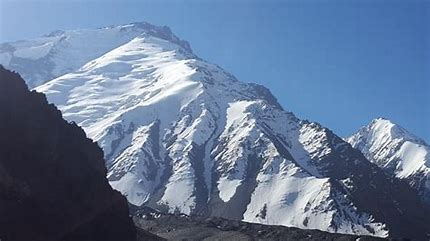

get to know georgia
შხარა — საქართველოს უმაღლესი მწვერვალი. ზემო სვანეთში, საქართველოსა და რუსეთის (ყაბარდო-ბალყარეთი) საზღვარზე.
სვანურ ენაზე შხარა „ცხრას“ ნიშნავს და მის ქედზე არსებულ მრავალ მწვერვალზე მიუთითებს. იგი წარმოადგენს კავკასიონის მთავარი წყალგამყოფი ქედის უმაღლეს წერტილს და კავკასიონის მთათა სისტემაში სიმაღლით მეორე ადგილს იყოფს მწვერვალ დიხთაუსთან, იალბუზის შემდეგ.
მთავარი შხარის სიმაღლე ზღვის დონიდან 5203 მეტრია, იგი აგებულია გრანიტისა და კრისტალოვანი ფიქალისაგან. ჩრდილოეთის მხრიდან მყინვარი ბეზენგი, სამხრეთიდან — შხარის მყინვარი. საზღვარი საქართველოსა და ყაბარდო-ბალყარეთს შორის გადის მის ქედზე.
ზოგიერთი წყაროს ცნობით, შხარას სიმაღლე 5208 მეტრია.[1] მისი დასავლეთი და ცენტრალური მწვერვალები აგრეთვე 5000 მეტრს ზემოთ მდებარეობენ. სამხრეთი მხარე კავკასიონის და ევროპის ერთ-ერთ უმაღლეს კედლად ითვლება და ის 2300 მეტრს აღწევს მთის ძირიდან მწვერვალამდე. შხარაზე არ არსებობს დაბალი და საშუალო კატეგორიის მარშრუტი ასასვლელად და დასაშვებად. კავკასიური შეფასების შკალით საშუალოდ 5ა - 6ა კატეგორიის გზები გვხვდება, რაც მის განსაკუთრებულ სირთულეზე მიუთითებს.
1888 წელი: პირველი ასვლა შხარის მთავარ მწვერვალზე განახორციელეს შვეიცარელმა ულრიხ ალმერმა, ქრისტიან როთმა და ბრიტანელმა ჯონ კოკინმა ჩრდილო კავკასიის მხრიდან, ჩრდილო-აღმოსავლეთ ქედით, ყაბარდო-ბალყარეთის მხრიდან.
1940 წელი: კავკასიონის მთავარი ქედის 20-მდე მწვერვალის გრანდიოზული, იმ დროისთვის უპრეცედენტო ტრავერსი (მაჩხაპარადან აილამას, ნამყვამის და შხარის ქედების გავლით, სანდროს უღელტეხილამდე) გაიარეს ალიოშა და ალექსანდრა ჯაფარიძეებმა, გოჯი ზურებიანმა, გაბრიელ და ბექნუ ხერგიანებმა
1950 წელს: სამხრეთ ფერდის პირველ-გავლა მთავარ მწვერვალამდე განახორციელეს ბექნუ და ბესარიონ ხერგიანები, ილია გაბლიანი, მაქსიმე გვარლიანი და ჭიჭიკო ჩართოლანი. ეს მარშრუტი ითვლება სამხრეთ ფერდის „კლასიკურ“ გზად, მისი სირთულე კავკასიური შეფასების შკალით დღემდე „5ბ“ არის.
იმავე პერიოდში და მის შემდეგ არაერთი ტრავერსი განხორციელდა შხარის გავლით, რომლებიც საბჭოთა ჩემპიონატებში, ტრავერსის კლასში საპრიზო ადგილებზე გადიოდა. ერთ-ერთი ასეთი ასვლაა წურუნგალა-შხარის ტრავერსი, რომელიც ალექსანდრე ნემსვიწერიძემ, გრიგოლ გულბანმა, რამინ კვიციანმა და ლევან ახვლედიანმა გაიარეს.
1963 წელს შხარის მთავარი მწვერვალიდან დაშვებისას ტრაგიკულად დაიღუპა გამორჩეული ქართველი ფოტოგრაფი და მთამსვლელი გურამ თიკანაძე.
1960 წლებიდან მოყოლებული შხარაზე საქართველოს მხრიდან შოთა მირიანაშვილის გუნდი აქტიურობდა. გიორი აგი აბაშიძემ, დიმიტრი დანგაძემ, ოთარ ხაზარაძემ და სხვებმა, სხვადასხვა შემადგენლობით დასაბამი დაუდეს რამდენიმე ახალ გზას შხარის დასავლეთ და ცენტრალურ მწვერვალებზე.
1986 წელს განხორციელდა პირველი ზამთრის ასვლა შხარაზე ჩრდილოეთის მხრიდან, ორი გუნდის მიერ. ასვლა კატასტროფით დასრულდა ერთ-ერთი გუნდის მთელი შემადგენლობა მწვერვალიდან დაშვებისას გაუჩინარდა. ამ ასვლას მალე მოჰყვა კიდევ ერთი ზამთრის გავლა ჩრდილოეთ კედლიდან, შემდეგ კი ბეზინგის ტრავერსის მცდელობა 2007 წელს მოსკოვის გუნდის მიერ, რომლის დროსაც გუნდის ლიდერი დაიღუპა, ხოლო გადარჩენილი ორი წევრის ევაკუაცია მხოლოდ დიდი ხნის შემდეგ, ვერტმფრენებით ოპერაციის შედეგად მოხერხდა.
2014 წელს ბეზინგის გრანდიოზული ტრავერსი ლალვერიდან შხარამდე ზამთარში საბოლოოდ სანქტ-პეტერბურგის გუნდმა, ნიკოლაი ტოტმიანინის ხელმძღვანელობით, წარმატებით გაიარა და ეს ტრავერსი შეფასდა უმაღლეს „6ბ“ სირთულის კატეგორიად.
2018 წლის 10 თებერვალს განხორციელდა პირველი ზამთრის ასვლა მთის უმაღლეს, სამხრეთ კედელზე, რომელიც კავკასიონის ერთ-ერთ უდიდეს გამოწვევად რჩებოდა. იგი საბოლოოდ ქართველმა მთამსვლელებმა არჩილ ბადრიაშვილისა და გიორგი ტეფნაძის ჩაბმამ ამოსხნა. ახალი გზა შეფასდა უმაღლეს, „6ბ“ სირთულის კატეგორიად, მის გავლას და მთიდან დაშვებას დასჭირდა 13 დღე. ასვლის შესახებ გადაღებულია მოკლემეტრაჟიანი დოკუმენტური ფილმი „შხარა - ზამთრის პირველ-გავლა“.